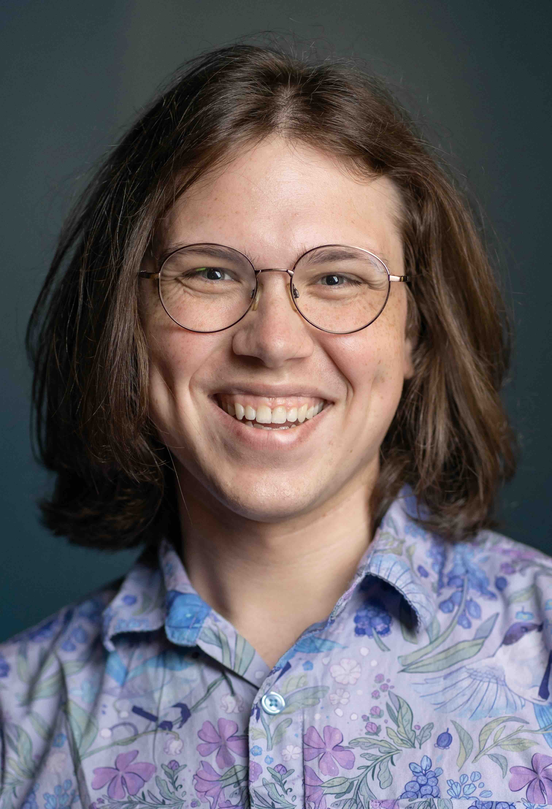
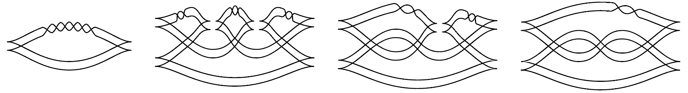

Hi, I'm Matt! I'm currently working as a software engineer and researcher at Galois. In 2019 I graduated from Haverford College with a major in Mathematics and a minor in Computer Science, and I love tackling challenging problems at the intersection of the two.
In computer science I'm interested in:
and in mathematics:
The open-source work I've done at Galois has mostly revolved around contributing to SAW and contributing to Cryptol, Galois' open-source tools for formal verification and cryptographic specification, respectively. In particular, I've spent a lot of time working with Eddy Westbrook on the Heapster and Mr. Solver extensions to SAW, which use logics based on separation types and Interaction Trees, respectively, to enable easy and automatic verification of unbounded programs. This work has resulted in two papers, which we wrote along with collaborators at UPenn:
Outside of work, in 2021 I made a brief foray into tuning theory: the theoretical side of microtonal music (AKA xenharmonic music). I created a tool called xen-calc, which streamlines the many different calculations and conversions I found myself doing while learning about the subject. It has been used over 30,000 times since its release at the start of September 2021, with a median of 36 page loads per day (avg. 61), and links to it have since been added to the sidebar of every interval in the Xenharmonic Wiki (e.g. en.xen.wiki/w/5/4). While working on xen-calc I authored a page on the Xenharmonic wiki discussing how one could modify the Functional Just System to better represent certain types of intervals. To go along with that, I made an interactive webpage for experimenting with different modifications of the FJS.
I love the programming language Agda, and in particular, its cubical mode. In 2019 and 2020 I spent some time contributing to the agda/cubical library – my first major contribution involved representing the integers as a higher inductive type, and perhaps my favorite involved defining the real projective spaces. I've also added homotopy colimits (#175), the dunce cap surface (#214), the pseudo-inverse to truncation (#226), and localization/nullification modalities (#230), the last of which is my most recent and really tested my cubical reasoning.
You can also find here an experiment with formalizing type theory in cubical Agda with Bryn Mawr professor Richard Eisenberg, and here a formalization of some basic knot theory in Agda. I've also contributed to the Glasgow Haskell Compiler, extending Haskell's type system in relation to type families and RULEs.
On the rightBelow is an example of (warning: jargon incoming!) a decomposable lagrangian cobordism between two legendrian knots. The animation is a series of cross-sections of a particular surface which connects two knots: an unknotted loop (the pinched-looking circle) and a trefoil knot. Pictured further below are frames of a decomposable cobordism between the twisted doubles of the same two knots, the construction of which I present in Section 4 of the paper:

I also enjoy photography, and dabble in glitch art – for example, the background of this page on desktop. I also love creating theater, and was the lighting designer for 8 student productions over the course of my four years at Haverford.
Send me an email! matthew (at) yacavone (dot) net
Site last updated: January 2024 · Home